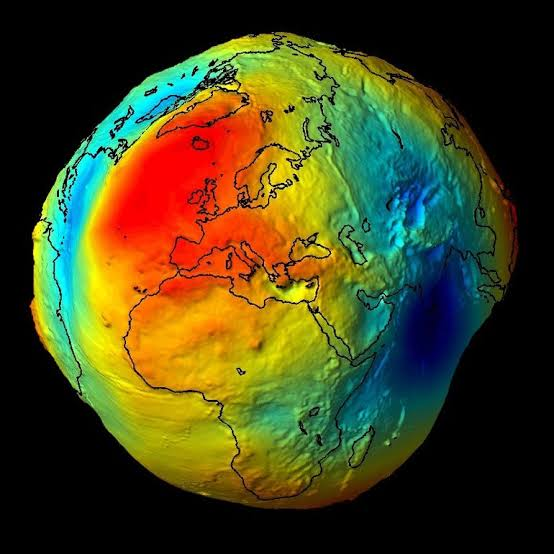

EL PROBLEMA DEL MUNDO
📅 2026-07-25
🏷️ CIENCIA

LOS PROBLEMAS DEBEN DESAPARECER
QUE ABURRIDO ES ESCRIBIR LA VERDAD YA TENDRIAN QUE HABER INVENTADO ALGO PARA ESO Y CREO QUE ES LA VOZ, MUY BIEN DIOS, TU PIENZAS EN TODO. DE QUÈ HABLABAMOS, HA, ERA DE INTENTAR TRANSMITIR LOS PENSAMIENTOS A TRAVES DE TECNOLOGIAS, QUE EMBOLE ESTA VIDA, SOLO ESO, BUSCAR ALGO PARA HACER MIENTRAS ESTAMOS EN ESTE MUNDO PROYECTAR, ESTAR PRESENTE, ES UN MUNDO COMO EL DE MINECRAFT PERO CON OTRAS GRAFICAS OTRAS MISIONES ES RARO ESCRIBO ESTO Y NI SIQUIERA SE SI SE VA A PUBLICAR, CREE UN PROGRAMA PARA PUBLICAR MAS FACIL ESTAS COSAS PORQUE ES UN RE QUILOMBO PERO SE LOGRA QUE SE YO, ESCUCHAN MUSICA, YO EXTRAÑO MI GUITARRA ELECTRICA PERO ME GUSTA LA ELECTROACUSTICA QUE TENGO, BUENO CREO QUE ESO ES TODO POR AHORA, DESDE EL PLANETA TIERRA REPORTANDO.
LOS PROBLEMAS DEBEN DESAPARECER
💬 Comentarios
💡 Los comentarios se cargan desde GitHub. Inicia sesión para participar.